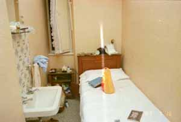

 部屋に入るとウナギの寝床のシングル、ベッドが一つあり右側が壁に寄っている、左側は幅６０ｃｍ位の細い 通路で洗面器が壁から飛び出して１つある。窓は小さく２０センチくらいしか開かない、風が入らない、暑い。 あれ？クーラーは？え！無いんだ。仕方なくシャワーを浴びる、何となくアレキサンドリアの宿舎と同じ造りで、同じにおい、同じ音の反響に町 のざわめきで懐かしくなった。朝起きて少ししか開かない窓から外を見た瞬間、カイロの屋根屋根を見た気がした、 一瞬俺はカイロに居るのかと思った。 地中海文化圏というよりエジプトは古代ローマが進駐したところ、雰囲気がイタリアに似ていても不思議はない。 今晩はクーラー付きのホテルに変えようと心に決めて、観光に出かける。これが失敗の始まり。 観光で疲れると探す元気はなくなる。また安ホテルに泊まるの繰り返しで３泊してしまった。そしてフローレンス (フィレンツエ)に列車で向かうことになる。 |